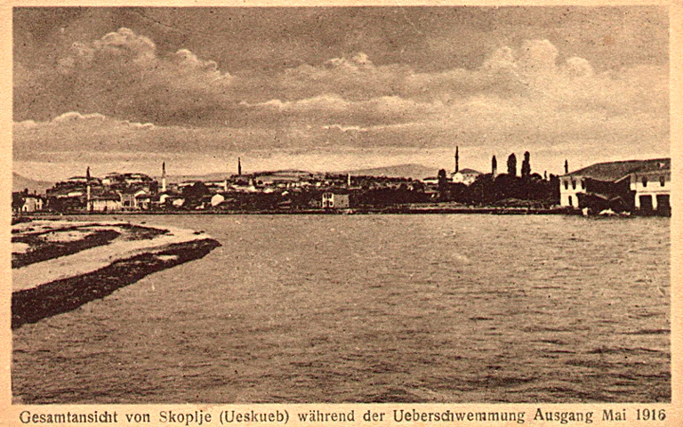
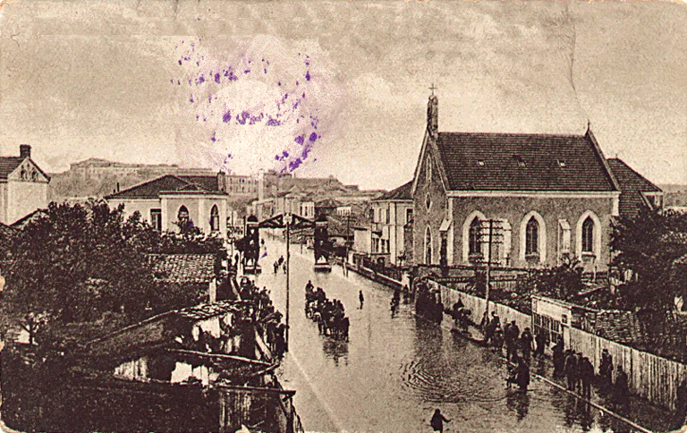
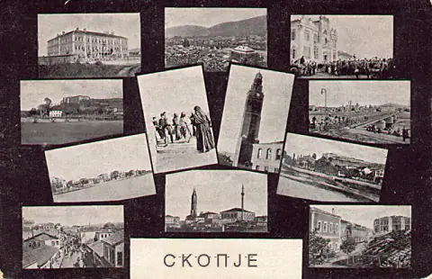

Poplava 1962. - 1
- Scenarij i režija
- Trajče Popov i Branko Gapo
- Snimatelj
- Branko Mihajlovski i Dušan Gajić
- Godina
- 1963
- Trajanje
- 00:16

Poplava Židovske mahale 1895. godine. Snimljeno s Kamenog mosta prema turskom kazalištu. U pozadini gore vidi se skopska tvrđava - Kale.

Poplava 1895. godine.

Poplava 1895. godine.

Poplava 1897. godine.

Poplava 1916. godine.

Poplava u svibnju 1916. godine. Pogled na Vardar kod drvenog mostića. Desno se vidi kavana „Boges“, u kojoj su se održavale prve kazališne predstave. U pozadini gore vidi se skopska tvrđava - Kale.

Poplava u svibnju 1916. godine. Glavna ulica ispred katoličke crkve.

Poplava u svibnju 1916. godine, na keju 13. studenoga, odmah uz Kameni most, na lijevoj obali Vardara. U pozadini se vidi Burmali džamija.

Poplava - 1962. godina. Glavna ulica do trga.

 Akvadukt4 razglednice
Akvadukt4 razglednice Kale30 razglednica
Kale30 razglednica Mostovi60 razglednica
Mostovi60 razglednica Kej58 razglednica
Kej58 razglednica Trg46 razglednica
Trg46 razglednica Građevine66 razglednica
Građevine66 razglednica Kršćanski hramovi19 razglednica
Kršćanski hramovi19 razglednica Muslimanske građevine33 razglednice
Muslimanske građevine33 razglednice Časnički dom29 razglednica
Časnički dom29 razglednica Kazalište28 razglednica
Kazalište28 razglednica Željeznički kolodvor13 razglednica
Željeznički kolodvor13 razglednica Škole36 razglednica
Škole36 razglednica Parkovi12 razglednica
Parkovi12 razglednica Tržnice18 razglednica
Tržnice18 razglednica Ulice38 razglednica
Ulice38 razglednica Panorama I60 razglednica
Panorama I60 razglednica Panorama II30 razglednica
Panorama II30 razglednica
Kolaži55 razglednica Poplave9 razglednica
Poplave9 razglednica Potres27 razglednica
Potres27 razglednica Skoplje 2000.26 razglednica
Skoplje 2000.26 razglednica